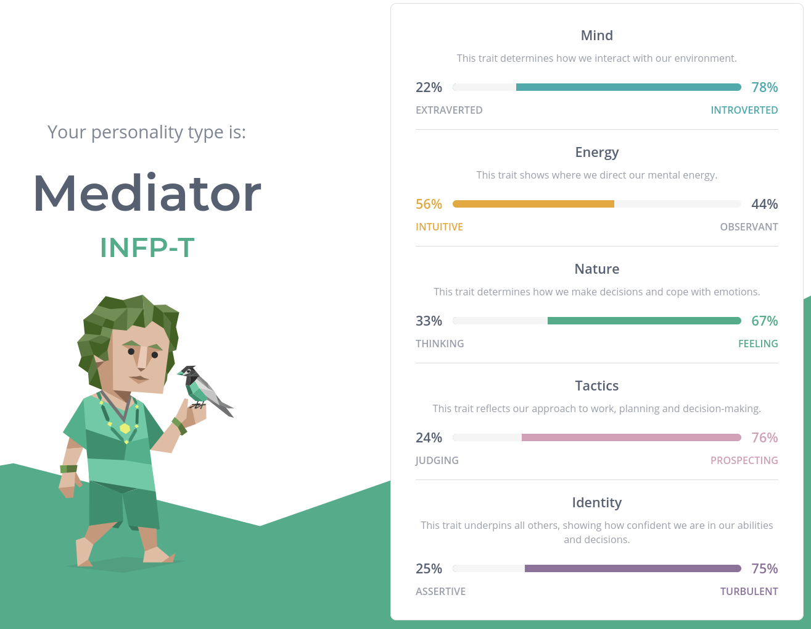
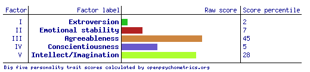

Assignment 1: My Profile
Menu > About Me | Interest In IT | My Ideal IT Job | Personal Profile | My Project Idea
Personal Profile
Myers-Briggs Personality Test

Learning Style Test
- Auditory: 30%
- Visual: 45%
- Tactile: 25%
Big Five Personality Test

Questions:
What do the results of these tests mean to me?:
Both the Big Five and Myers-Briggs personality tests point out that I am very introverted this means I tend to keep to myself and I am generally
happy to be alone. I find this to be generally true of me, I am more than happy to be by myself for days at a time. For a year I lived in a caravan
park and interacted with basically nobody, out of pure embarrassment and lack of internet, besides my mother and that lack of socialisation didn’t take
much of a toll on me. As a mediator I am considered to be quite emotional and empathetic. I also find this true to me as I find myself crying at all
sorts of things. I often cry about fictional characters and stories that I’ve already heard. My learning type as per educationplanner.org’s learning
is that of a visual learner this means I learn mest by seeing things done, reading and visualising things.
How do I think these results may influence my behaviour in a team?:
As Introversion is a common thread across my Big Five and Myers-Briggs tests I need to take extra care to communicate with my teammates and ensure
that I make any issues I may have clear and that I ask what my teammates need me to do. As a mediator I am rather empathetic, as a team member I can
take advantage of this to help other team members that may be struggling and hopefully reach out to them proactively (assuming my introversion doesn’t
get in the way). This also plays into my optimistic outlook as hopefully I don’t fall into a depressive slump so I can always be relied upon to take
care of the team. This optimism can be a double-edged sword however, as I may be so optimistic as to be blinded of my, and others, failings, letting
down the team.
How should I take this into account when forming a team?:
I don’t have a leadership bone in my body, because of this I should seek out a team containing a strong leadership candidate and I’m rather agreeable,
making for an easy to manage team member. As primarily a visual learner I should seek out team members who are also visual learners, that way if
required we can learn new skills together using the same methods. But I am also a fairly well-rounded learner so I could cope with non-visual learner
team members. As I can be emotionally driven, I should find contrasting team members who and those who can keep my emotionality focused on important matters.